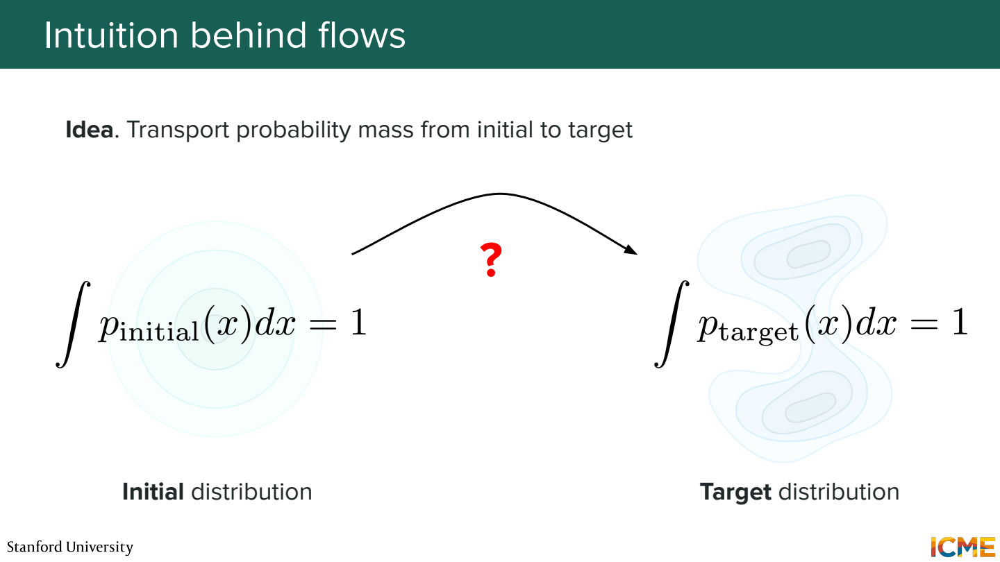
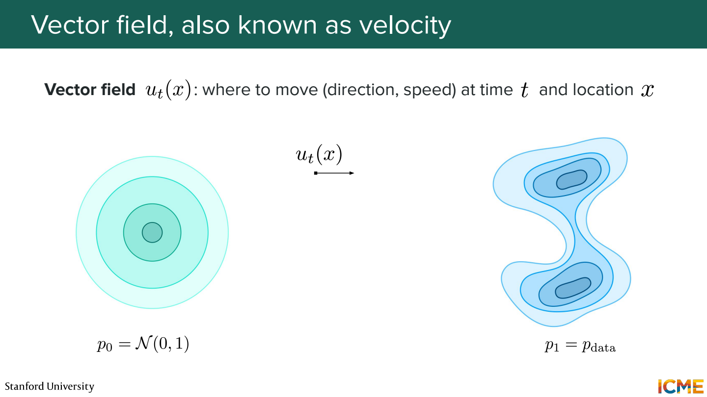
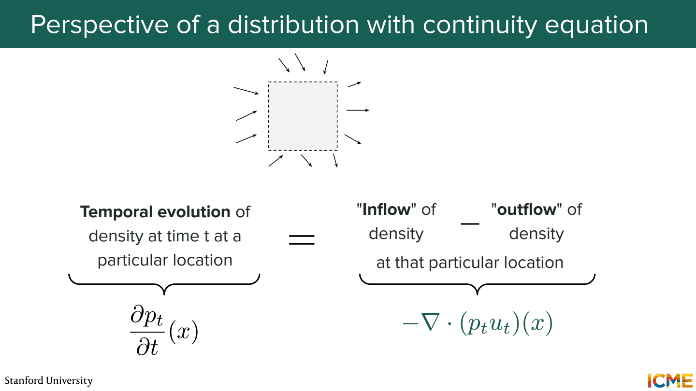
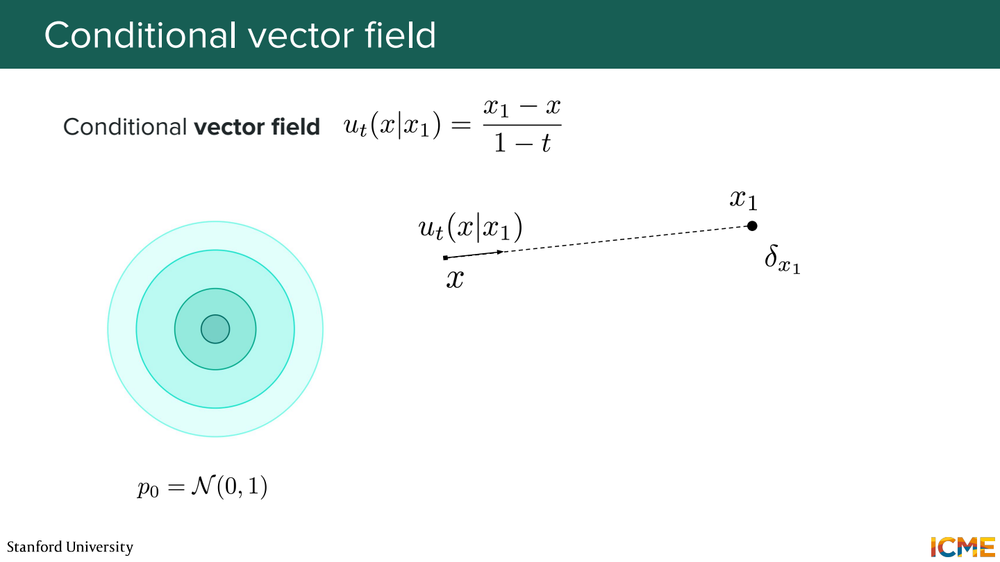
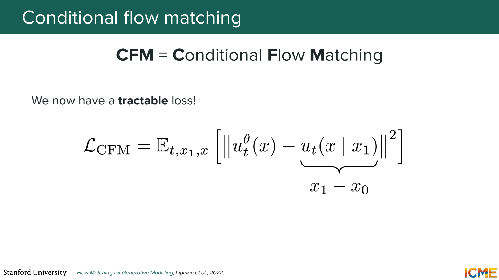
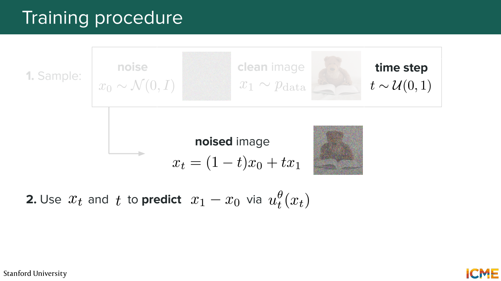
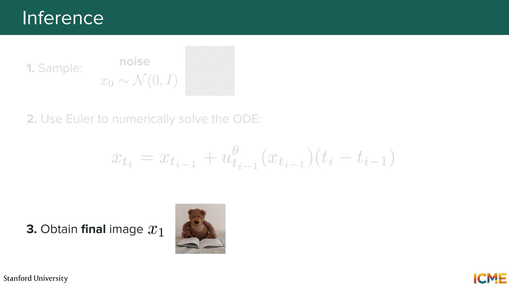
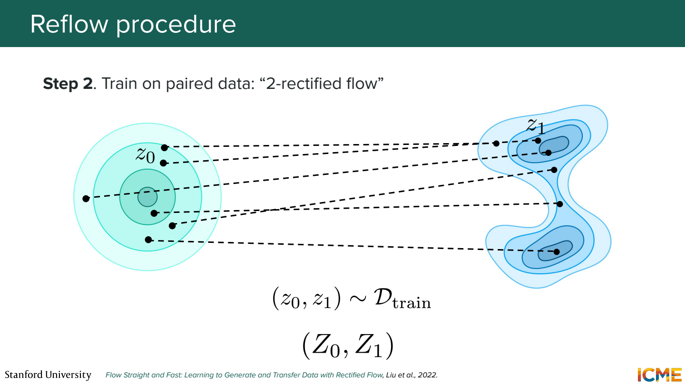
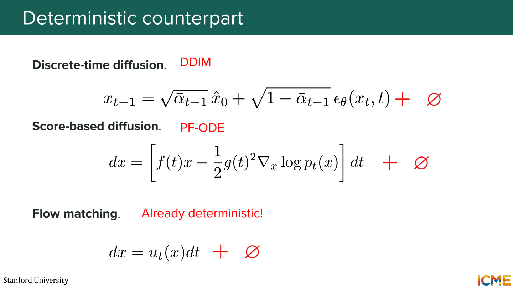

이 노트의 목차
3단원 노이즈를 데이터로 옮기는 속도 학습하기
이번에는 score 대신 velocity를 예측. 현재 위치와 시간에서 어느 방향으로 얼마나 움직일지 학습하는 방식.
분포를 다른 분포로 이동

처음에는 Gaussian noise에서 점을 뽑고, 마지막에는 이미지 데이터처럼 분포하게 만들기. 샘플 하나가 움직이는 경로를 많이 모으면 분포 전체의 변화가 됨.
여기서는 강의의 flow matching 표기에 맞춰 t=0은 노이즈, t=1은 데이터로 둠.
DDPM에서 x₀를 깨끗한 이미지라고 썼던 것과 방향이 바뀜.

dx_t / dt = v_θ(x_t, t)
v는 위치 x_t와 시간 t에서의 속도 벡터.
예를 들어 현재 x=1, 예측 속도 2, 작은 시간 간격 0.1이면 Euler 한 걸음은 1+0.1×2 = 1.2.
실제로는 이동한 위치에서 속도를 다시 계산.
점들의 이동과 밀도의 변화

같은 구간 안으로 들어오는 점이 나가는 점보다 많으면 그 구간의 밀도가 높아짐. 반대면 밀도가 낮아짐.
∂p_t / ∂t = -∇·(p_t v_t)
p_t v_t는 밀도가 속도를 따라 흐르는 양. 발산은 한 지점 주변에서 밖으로 퍼져 나가는 정도로 생각. 샘플을 옮기는 식과 분포가 변하는 식을 연결하는 관계.
정답 속도를 어떻게 만드나

노이즈 x₀와 데이터 x₁을 하나씩 뽑아서 직선 경로를 만들면 간단해짐.
x_t = (1-t) x₀ + t x₁
이 경로의 속도 = x₁ - x₀
숫자 예제로 x₀=-1, x₁=3이면 속도는 4. t=0.25에서 x_t=0, t=0.5에서 x_t=1.
직선 한 개 위에서는 속도가 일정하므로 target을 바로 계산할 수 있음.
가우시안 시작점을 하나의 데이터로 모으는 조건부 표현은 (x₁-x)/(1-t)로도 나타남.

loss = E[ ||v_θ(x_t, t) - (x₁-x₀)||² ]
같은 위치와 시간에 서로 다른 학습 경로가 지나갈 수도 있음. 모델은 그 위치에서 가능한 조건부 속도들을 평균하는 방향을 배우게 됨. 특정 원본으로 가는 직선 하나를 외우는 것과 다름.
학습 때는 경로 전체를 적분하지 않음

noise x₀, data x₁, 시간 t 선택
→ x_t를 식으로 계산
→ v_θ(x_t,t) 예측
→ x₁-x₀와 비교
각 업데이트를 위해 ODE solver를 끝까지 돌릴 필요는 없음. 중간 위치와 정답 속도를 직접 만들 수 있기 때문.

반면 생성할 때는 정답 x₁을 모름. 새 노이즈에서 시작해 모델이 예측하는 속도를 따라 0에서 1까지 적분.
x_{t+Δt} ≈ x_t + Δt × v_θ(x_t,t)
학습 경로가 직선이면 생성도 한 걸음이면 되나?
여러 조건부 경로를 평균한 vector field의 실제 궤적은 휘어질 수 있음. 한 위치에서 구한 속도를 끝까지 유지하면 오차가 커질 수 있음.
Rectified flow와 reflow

학습된 flow로 노이즈를 실제로 이동시켜 도착점을 얻음. 그 시작점과 도착점을 새 쌍으로 묶고, 다시 더 곧은 이동을 학습하는 것이 reflow의 핵심.
처음: 무작위로 연결한 noise와 data
reflow: 기존 모델이 연결한 시작점과 도착점
경로를 덜 휘게 만들어 적은 step으로도 이동하기 쉽게 하려는 것. 이 과정이 언제나 전역 최적의 수송 경로를 보장한다고 읽으면 안 됨.
DDIM, ODE, flow의 공통점

모두 초기 노이즈에서 출발해 데이터 쪽으로 이동하는 생성 경로를 만들 수 있음. 다만 어떤 경로를 정하고 무엇을 예측하도록 학습하는지가 다름.
- DDPM parameterization: 넣었던 노이즈 ε를 예측
- Score matching: noisy distribution의 log density 기울기를 예측
- Flow matching: 선택한 확률 경로를 움직이는 속도를 예측
같은 Transformer를 사용하더라도 출력의 의미와 sampler가 달라질 수 있음.